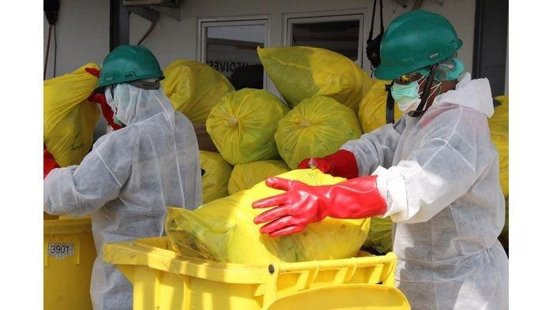

Pengertian Limbah Medis Kontainer Bertekanan
Limbah medis kontainer bertekanan merupakan jenis limbah medis yang sangat berbahaya jika tidak dikelola dengan benar. Limbah ini seringkali mengandung zat-zat berbahaya dan beracun yang dapat menimbulkan risiko kesehatan dan lingkungan yang serius. Oleh karena itu, pengelolaan limbah medis kontainer bertekanan harus dilakukan secara hati-hati dan sesuai dengan prosedur yang telah ditetapkan.
Perencanaan
Melakukan identifikasi terhadap jenis, jumlah, dan karakteristik limbah medis kontainer bertekanan yang dihasilkan. Mengevaluasi potensi bahaya yang dapat ditimbulkan oleh limbah, seperti infeksi, ledakan, atau pencemaran lingkungan dengan memilih metode pengelolaan yang sesuai dengan jenis limbah dan peraturan yang berlaku, misalnya autoklaf, insinerasi, atau pengolahan khusus lainnya.
Pelaksanaan
Mengumpulkan limbah medis kontainer bertekanan secara terpisah dan aman menggunakan wadah yang tertutup rapat dan bertanda khusus yang menyimpan limbah medis kontainer bertekanan di tempat yang aman, terkunci, dan terpisah dari limbah medis lainnya, kemudian diangkut limbah medis kontainer bertekanan menggunakan kendaraan khusus yang dilengkapi dengan peralatan keselamatan yang memadai dan melakukan pengolahan limbah medis kontainer bertekanan sesuai dengan metode yang telah dipilih, misalnya dengan cara sterilisasi, disinfeksi, atau pemusnahan.
Evaluasi dan Dokumentasi
Melakukan pemantauan secara berkala terhadap proses pengelolaan limbah medis kontainer bertekanan kemudian mengevaluasi kinerja pengelolaan limbah secara berkala untuk mengidentifikasi kekurangan dan mencatat semua aktivitas pengelolaan limbah, termasuk jenis limbah, jumlah, metode pengolahan, dan hasil evaluasi.
Pelaporan
Menyusun laporan berkala mengenai hasil pengelolaan limbah medis kontainer bertekanan kepada pihak yang berwenang, lalu menyusun laporan akhir yang berisi rangkuman keseluruhan kegiatan pengelolaan limbah.

Dampak Negatif Limbah Medis Kontainer Bertekanan
Limbah medis kontainer bertekanan memiliki potensi bahaya yang sangat tinggi jika tidak dikelola dengan benar. Beberapa dampak negatif yang dapat ditimbulkan antara lain:
Dampak Kesehatan
Limbah medis seringkali terkontaminasi oleh patogen berbahaya seperti virus, bakteri, dan jamur. Jika tidak ditangani dengan benar, patogen ini dapat menyebar dan menyebabkan berbagai penyakit menular.
Dampak Lingkungan
Pencemaran Tanah jika limbah medis dibuang sembarangan atau tidak diolah dengan benar, zat-zat berbahaya di dalamnya dapat meresap ke dalam tanah dan mencemarinya.
Efek Jangka Panjang pada Lingkungan
Beberapa limbah medis kontainer bertekanan mengandung gas bertekanan tinggi yang dapat meledak jika terkena panas atau benturan yang menimbulkan ketakutan masyarakat sekitar dengan tempat pembuangan limbah medis, seringkali merasa khawatir akan dampak kesehatan yang ditimbulkan.
Penanganan Limbah Medis Kontainer Bertekanan
Limbah medis kontainer bertekanan merupakan jenis limbah medis yang sangat berbahaya dan memerlukan penanganan khusus. Limbah ini seringkali mengandung zat-zat berbahaya dan beracun yang dapat menimbulkan risiko kesehatan dan lingkungan yang serius jika tidak dikelola dengan benar.
Pemisahan
Pisahkan limbah medis kontainer bertekanan dari jenis limbah medis lainnya seperti sampah tajam, limbah patologi, dan limbah farmasi. Gunakan wadah khusus yang berwarna kuning dan bertanda biohazard untuk menampung limbah ini.
Penampungan
Tempatkan wadah berisi limbah medis kontainer bertekanan di tempat yang aman, kering, dan tidak mudah terbakar. Pastikan wadah tertutup rapat dan tidak bocor. Hindarkan penumpukan limbah medis dalam jumlah yang berlebihan.
Pengangkutan
Gunakan kendaraan khusus yang dilengkapi dengan peralatan keselamatan untuk mengangkut limbah medis. Pastikan limbah medis terikat dengan kuat di dalam kendaraan agar tidak bergeser selama perjalanan. Lindungi petugas pengangkut dengan memberikan Alat Pelindung Diri (APD) yang lengkap.
Pengolahan
Limbah Kontainer Bertekanan harus diolah dengan cara yang aman, seperti:
- Autoklaf: Sterilisasi dengan uap bertekanan tinggi untuk membunuh mikroorganisme.
- Insinerasi: Pembakaran pada suhu tinggi untuk menghancurkan limbah dan mengurangi volume.
- Plasma Arc: Menggunakan plasma suhu tinggi untuk memecah molekul limbah menjadi komponen dasar.
- Pengolahan Kimia: Menggunakan bahan kimia untuk menetralkan atau menghancurkan zat berbahaya.
Teknologi dan Inovasi dalam Pengelolaan Limbah
Pengolahan limbah medis kontainer bertekanan memerlukan teknologi yang spesifik dan terus berkembang untuk memastikan keamanan dan keberlanjutan lingkungan. Berikut beberapa teknologi dan inovasi yang umum digunakan:
Insinerasi
Proses pembakaran pada suhu tinggi untuk menghancurkan limbah menjadi abu. Meskipun efektif dalam mengurangi volume, insinerasi dapat menghasilkan emisi berbahaya jika tidak dilakukan dengan benar.
Autoklaf
Merupakan metode sterilisasi dengan menggunakan uap bertekanan tinggi. Proses ini efektif untuk membunuh mikroorganisme, namun tidak mengurangi volume limbah secara signifikan.
Plasma Arc
Plasma Arc merupakan teknologi yang menggunakan plasma suhu tinggi untuk memecah molekul limbah menjadi komponen dasar yang lebih sederhana dan stabil. Proses ini sangat efektif dalam menghancurkan bahan organik dan mengurangi volume limbah.
Bioremediasi
Menggunakan mikroorganisme untuk mengurai zat berbahaya dalam limbah menjadi zat yang tidak berbahaya. Metode ini ramah lingkungan dan dapat digunakan untuk mengolah limbah organik.
Tantangan dalam Pengelolaan Limbah
Pengelolaan limbah kontainer bertekanan merupakan tantangan tersendiri dalam pengelolaan limbah secara umum. Beberapa tantangan utama yang dihadapi antara lain:
1. Sifat limbah yang berbahaya memicu potensi ledakan limbah kontainer bertekanan mengandung gas atau cairan bertekanan tinggi yang dapat meledak jika tidak ditangani dengan benar.
2. Biaya pengelolaan yang tinggi memungkinkan teknologi khusus dan mahal untuk mengolah limbah jenis ini, seperti insinerator, autoklaf, atau plasma arc.
3. Regulasi yang kompleks membuat peraturan ketat yang memungkinkan pengelolaan limbah kontainer bertekanan diatur oleh berbagai peraturan yang ketat terkait kesehatan, keselamatan, dan lingkungan.
Penutup
Penanganan limbah medis kontainer bertekanan merupakan hal yang sangat penting untuk dilakukan. Dengan menerapkan prosedur yang benar, kita dapat meminimalkan risiko yang ditimbulkan oleh limbah medis dan menjaga kesehatan lingkungan serta masyarakat.